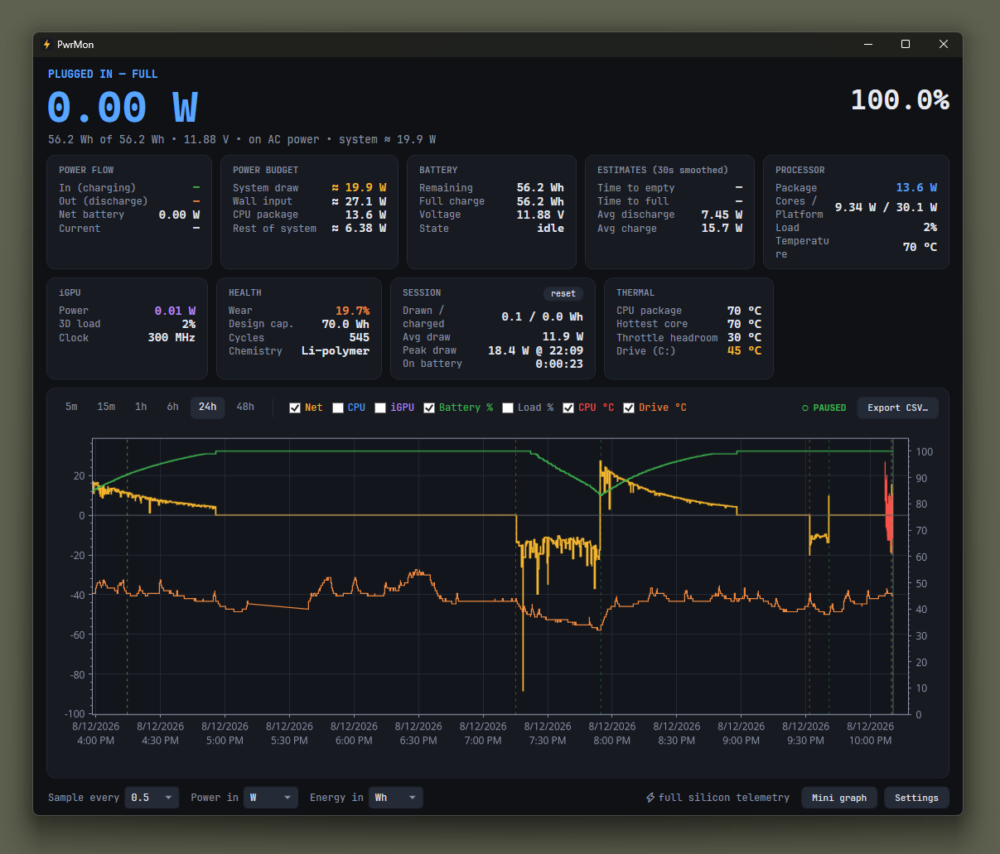
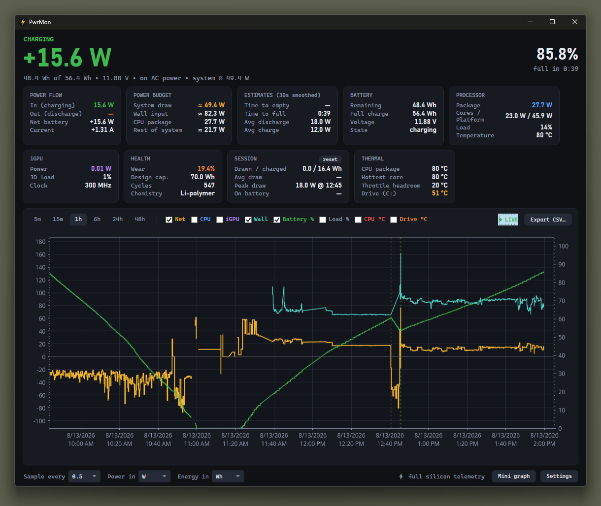
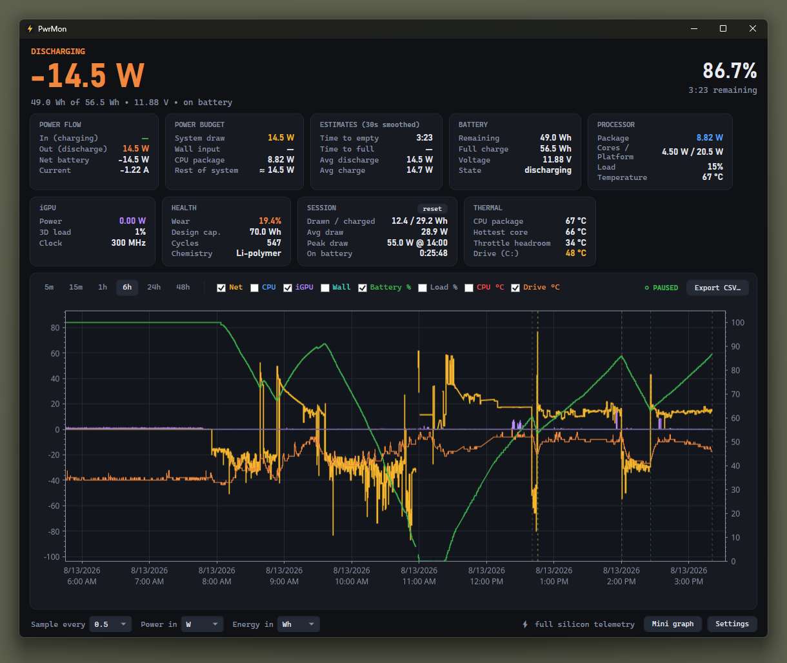
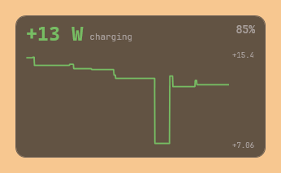
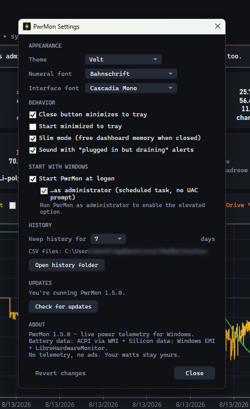

Live power flow
Charge/discharge watts from the battery's own fuel gauge over ACPI, plus net flow, voltage and current.
Live power telemetry for Windows laptops. Because every battery app shows you health summaries when what you want to know is what your machine is pulling right now, in watts.
PwrMon runs daily on its author's machine and does what this page says. What it hasn't had is contact with other hardware: verified on one laptop, and its driverless sensor path is confirmed on Intel only. Every claim here is scoped to what has actually been observed, and will widen as hardware reports arrive.
On battery, discharge rate is your total system draw — that's physics, not an estimate. Windows knows this number. It just won't show it to you, and neither will the battery apps on the Store, which prefer to report a wear percentage and a wildly optimistic time-remaining guess. PwrMon reads the fuel gauge directly and puts the watts on screen.
The design constraint the whole project hangs on: read real silicon power without loading a kernel driver that Microsoft has blocklisted. Most tools in this category ship WinRing0. PwrMon doesn't, and never loads it.
Charge/discharge watts from the battery's own fuel gauge over ACPI, plus net flow, voltage and current.
RAPL package, core and iGPU power — with no administrator and no kernel driver, via Windows' own Energy Meter counters.
Pan/zoomable multi-series chart over 5 minutes to 48 hours, with AC plug/unplug and resume markers. Persists across restarts.
Drive °C with no admin at all; CPU package, hottest core and throttle headroom in the elevated tier.
The live number rendered as the tray icon — green charging, orange discharging, red heavy draw. "Heavy" is learned from this machine's own discharge history rather than a fixed wattage, so it means the same thing on a tablet and a gaming laptop.
Borderless translucent sparkline plotting any of eight series over 60 seconds to 24 hours. Draggable, resizable, optionally always-on-top and click-through.
Time-to-empty and time-to-full from 30-second smoothed rates, not Windows'
EstimatedRunTime.
Daily CSV history under %LocalAppData%, pruned on a retention window you set.
Exportable. Never uploaded.





PwrMon reads CPU and iGPU power from whichever of two sources is available, and prefers the one that asks nothing of you. Battery wattage — the number that tells you your total system draw — works at every tier.
| Tier | What you get | Requirement |
|---|---|---|
| Default every user |
Battery watts & health, CPU/iGPU watts via Energy Meter counters, CPU load, drive °C | Nothing. No UAC prompt, no driver, unaffected by Memory Integrity. |
| Full elevated |
Everything above, plus platform (PSys) power, CPU package and hottest-core temperature, throttle headroom | Administrator + PawnIO, a signed HVCI-compatible sensor driver |
The default tier is the part most tools in this category don't have. Elevation is an upgrade for platform power and temperatures — not a prerequisite for watts.
The interesting parts of a project this age are the edges. These are the real ones, taken from the repo's own ISSUES.md: